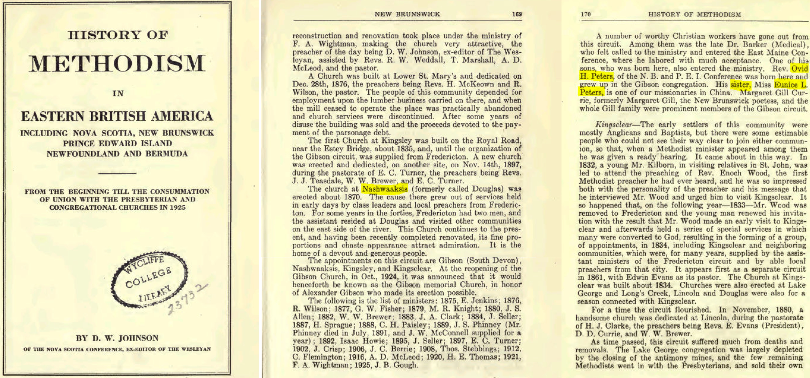

Eunice Louisa Peters 1897 - 1991
[ Home ] | [ Calendar ] | [ Surnames Index ] | [ Family History ]The youngest of 7 children of Richmond Peters (a farmer) and Caroline Warman, Eunice Peters, the third cousin twice-removed on the father's side of Nigel Horne, was born in Barkers Point, York, New Brunswick, Canada on Sep 10, 18971,2,3.
Throughout her life, Eunice lived in several places: in New Brunswick, Canada in 19015; in York, New Brunswick in 19111; in Douglas, York, New Brunswick on Jun 1, 19212; and in York, New Brunswick in 19454 (the same place as her mother had been living in 1911). In 1927 she traveled from Hong Kong, China to Victoria, British Columbia, Canada, arriving 27 Mar.
She died on Feb 5, 1991 in Fredericton, York, New Brunswick.
Parents
- Richmond Noble was born on May 9, 1856
- Caroline Lucinda was born on Mar 17, 1859
Citations
- 1911 Census of Canada Online publication - Provo, UT, USA: Ancestry.com Operations Inc, 2006. .Original data - Library and Archives Canada. Census of Canada, 1911. Ottawa, Ontario, Canada: Library and Archives Canada, 2007. http://www.collectionscanada.gc.ca/databases/census-19 (Marital Status: SingleRelation to Head of House: Daughter)
- 1921 Census of Canada Ancestry.com Operations Inc (Marital Status: SingleRelation to Head of House: Sister)
- Canadian Passenger Lists, 1865-1935 Online publication - Provo, UT, USA: Ancestry.com Operations Inc, 2010. .Original data - Passenger Lists, 1865–1935. Microfilm Publications T-479 to T-520, T-4689 to T-4874, T-14700 to T-14939, C-4511 to C-4542. Library and Archives Canada,n.d. RG 76-C. D
- Canada, Voters Lists, 1935-1980 Ancestry.com Operations, Inc.
- Canada Census 1901 - Findmypast (was the daughter of the head of the household)
Media
History of Methodism in Eastern British America

Canada Census 1901 - CAN/CENSUS/1901/00742763
Family Tree

Generated by Ged2Site. Last updated on Jul 20, 2025